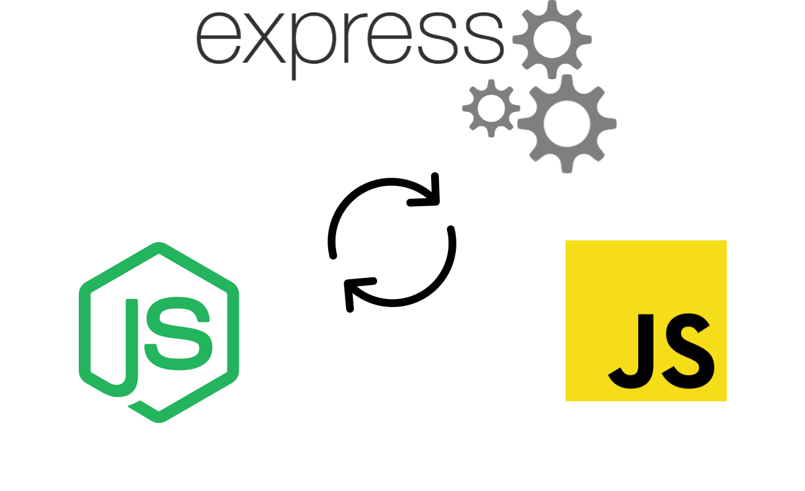

INF Senior Project
Martin Nestorov
What is an Interactive CV?
Requirements
Functional
Non-Functional
Functional
Heavy data load handle
Gather resources from the internet
Manage files
Printable
Easily distributes user data
Non-Functional
Lightweight
Scalable
Easily distributes whole application
Easy to start
Easy to setup
Technologies used

Architecture used
Highly modulated => One framework that you can plug in small modules.
So far what's been done
project['file-system'] = "done";
project['basic front-end'] = "done";
project['terminal commands'] = "done";
project['web crawler'] = "in-progress";
project['cookies'] = "in-progress";
What's left to do
TODO
Setup wizard
Installer
Printable CV
More File types support
References
BTRFS
File System Implementation
Directory indexing
The UNIX File System